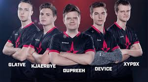
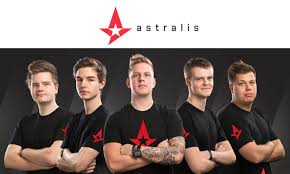
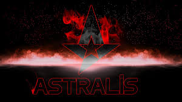
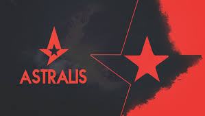

Фото

Фото1

Фото2

Фото3

Фото4
Про команду
Astralis - датська організація, що належить гравцям колишньої команди Данії Team SoloMid / Questionmark, за допомогою свого менеджера Фредеріка "realition" Биськова. Права на ім'я Astralis були отримані від оригінальних засновників фінської контр-ударної команди.
1st - IEM Katowice Major 2019[2]
1st - FACEIT Major: London 2018[3]
1st — ELEAGUE CS:GO Premier 2018
3-4th — MLG Major Championship: Columbus
5-8th — ESL One Cologne 2016
5-8th — ELEAGUE Season 1[4]
2nd — ELEAGUE Season 2[5]
1st — ECS Season 2 Finals, 2016[6]
1st — ELEAGUE Major 2017[7]
1st — Intel Extreme Masters XI - World Championship[8]
2nd — StarLadder i-League StarSeries Season 3[9]
3-4th — IEM Sydney 2017[10]
1st — ELEAGUE Clash for Cash[11]
3-4th — Esports Championship Series Season 3 - Finals[12]
3-4th — PGL Major Kraków 2017[13]
2nd — ELEAGUE CS:GO Premier[14]
1st — DreamHack Masters Marseille 2018[15]
2nd — IEM Sydney 2018[16]
1st — ESL Pro League Season 7 Finals[17]
1st — ECS Season 5 Finals[18]
3rd-4th — ESL One Cologne 2018[19]
1st — ELEAGUE CS:GO Premier 2018[20]
1st — ESL Pro League Season 8 Finals[21]
1st — BLAST Pro Series Lisbon 2018[22]
1st — IEM Chicago 2018[23]